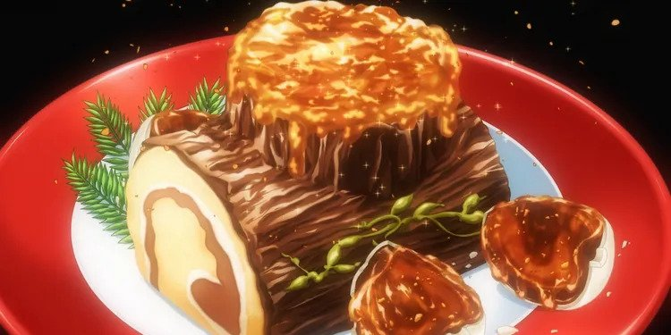

Buche de Noel

Description
Bûche de Noël was made by Sōma Yukihira for his battle with Sarge in the BLUE Championship. This cake looked
appetizing despite being completely free of added sugar or dairy whatsoever, and the detail that went
into making this cake look like a literal log from the outside impressed many viewers.
Ingredients
- Cake
- 2 cups heavy cream
- 1/2 cup confectioners' sugar
- 1/2 cup unsweetened cocoa powder
- 1 teaspoon vanilla extract
- 6 egg yolks
- 1/2 cup white sugar
- Filling
- 1/3 cup unsweetened cocoa powder
- 1 1/2 teaspoons vanilla extract
- 1/8 teaspoon salt
- 6 egg whites
- 1/4 cup white sugar
- confectioners' sugar for dusting
Steps
- Preheat the oven to 375 degrees F (190 degrees C). Line a 10x15 inch jellyroll pan with parchment paper
In a large bowl, 1/2 cups confectioners' sugar, 1/2 cup cocoa, and 1 teaspoon vanilla until thick and stiff.
Refrigerate
- In a large bowl, use an electric mixer to beat egg yolks with 1/2 cup sugar until pale in color, light and
frothy. Blend in 1/3 cup coca, 1 1/2 teaspoons vanilla, and salt.
- In large glass bowl, using clean beaters, whip egg whites to soft peaks. Gradually add 1/4 cup sugar, and
beat until white form stiff peaks.
- Immediately fold the yolk mixture into the whites.
- Spread the batter evenly into the preheated pan.
- Bake for 12 to 15 minutes in the preheated oven, or until the cake springs back when lightly touched.
- Dust a clean dishtowel with confectioners' sugar. Run a knife around the edge of the pan, and turn the
warm cake out onto the towel. Remove and discard parchment paper
- Starting at the short edge of the cake, roll the cake up with the towel. Cool for 30 minutes.
- Unroll the cake, and spread the filling to within one 1 inch of the edge.
- Roll the cake up with the filling inside. Place seam side down onto a serving plate, and refrigerate until serving.
Back to recipes